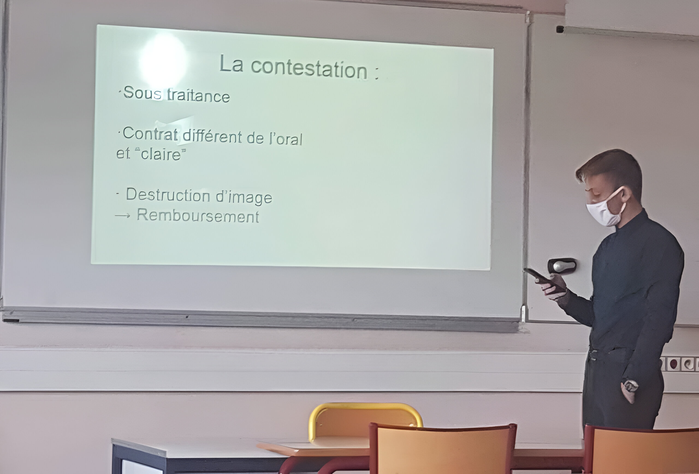

Le droit était une évidence pour moi. Je voulais devenir avocat depuis petit. C'est un métier que j'ai toujours vu comme indépendant et fort, des valeurs qui ont toujours été importantes pour moi.
Droit

En 3ème, c’est évidemment dans un cabinet d'avocat que j'ai fait mon stage découverte. Celui de LLM Saintes me permit d’affirmer ma vision sur ce que j'attendais de cette voie.

Au lycée, je pris l’option Droit et Grands Enjeux du Monde Contemporain qui me permettra d’avoir une première approche de l’apprentissage du droit. Pendant cette période, je fis une première découverte de la politique, en participant aux élections lycéennes. D’abord en intégrant le Conseil de la Vie Lycéenne, puis le Conseil d’Administration de mon Lycée (ce qui, par ailleurs, me fera découvrir les Assemblées générales) je deviendrai ensuite le Vice-Président lycéen de ces deux organisations.

Après avoir obtenu mon BAC général, j'ai poursuivi mes études à l'université en intégrant la faculté de droit de La Rochelle.
Pendant mes études, j’ai pu faire un stage d’apprentissage au côté de Maître ENOS dans le cabinet FED. Ce fut un mois très formateur, que ce soit professionnellement ou mentalement.
Plus récemment et bercé par ma culture internationale, j’ai décidé de suivre des cours en ligne de droit international. Un sur le droit des contrats anglais proposés par Harvard HLS2X, un autre sur une introduction au droit civil japonais proposé par Tokyo Tech.
Mon objectif sera alors de m'orienter soit sur un Master en droit des affaires internationales soit sur un Master en droit des affaires spécialisé dans le numérique, même si j'ai une préférence pour ce dernier.